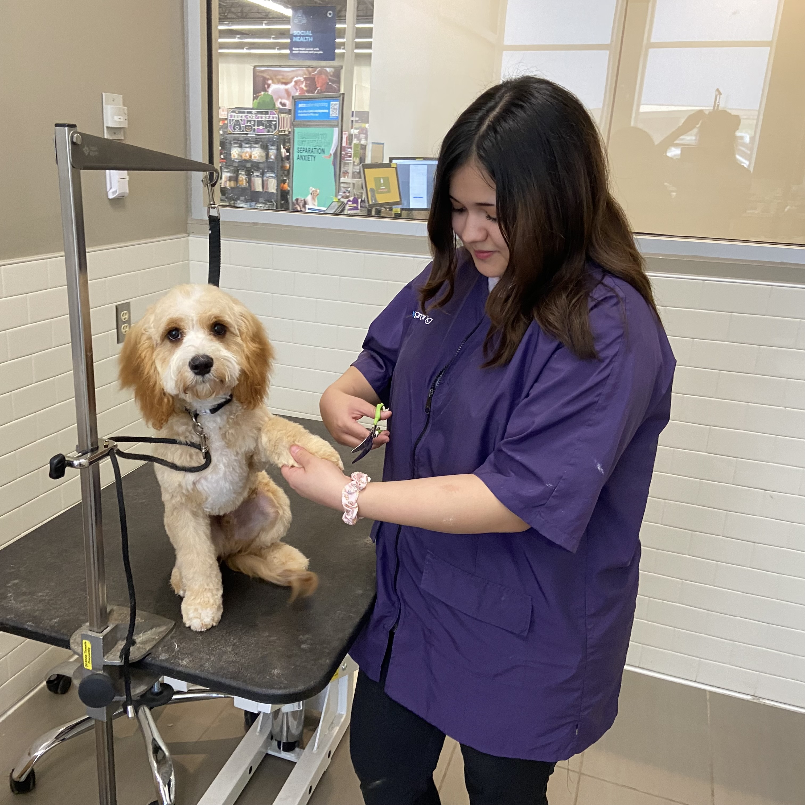

About Me
Hello, my name is Devanne and I have been grooming dogs for 14 months. I enjoy the work that I do and am always jumping at opportunities to learn something new. I take a holistic approach to dog grooming; I consider the dog's physical, emotional, mental, and social health.
Like many dog groomers, I believe in humanity over vanity. I will always prioritize your dog's comfort and health above everything else. Dog grooming can be very stressful for some dogs, so I do my best to offer them reassurance and to build their confidence and trust.
I am an AKC S.A.F.E. certified dog groomer. I am knowledgable of and able to accomodate dogs in different stages of life and with varying conditions, such as: puppies and senior dogs, brachycephallic breeds, dogs that may experience seizures, dogs with a collapsed trachea, allergies, hypothyroidism, candida, cushing's disease, addison's disease, diabetes, or hypoglycemia.